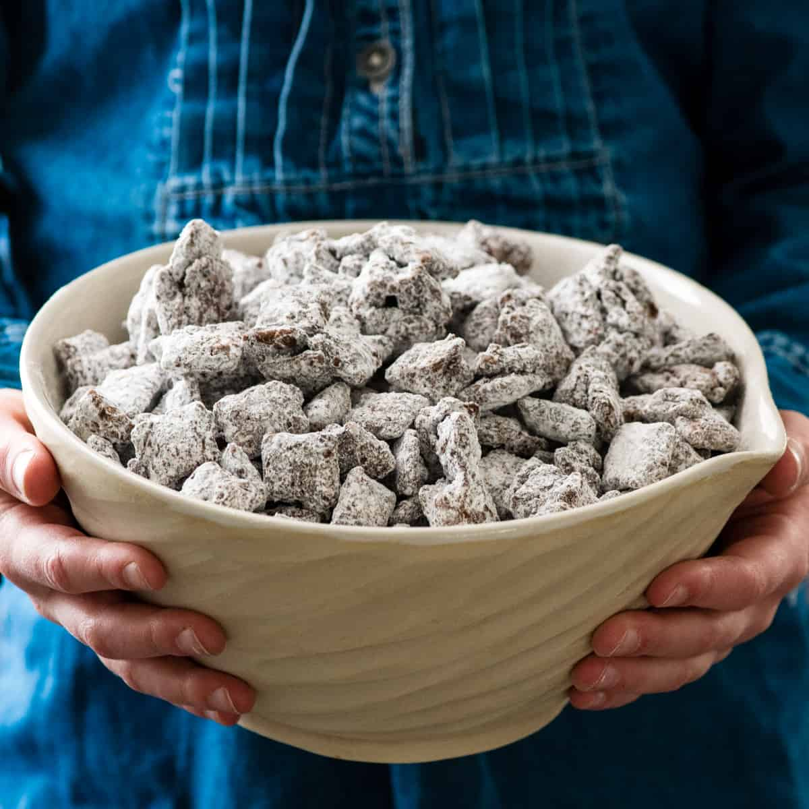

Puppy Chow

A delicious Puppy Chow Recipe the whole family will enjoy!
Everyone needs this best Puppy Chow recipe in their collection! This crunchy homemade puppy chow is quick and easy to make with just a handful of everyday ingredients, is a tatsy treat, and perfect for cozy winter movies, potlucks, lunches, or light dinners.
Ingredients
- 1 cup semisweet chocolate chips (or dark chocolate)
- 1 cup creamy peanut butter
- 6 cups Rice Chex Cereal
- 1 ½ cups powdered sugar
Steps
- Melt peanut butter and chocolate together, either on the stovetop or in the microwave.
- Next, add 3 cups of cereal to a large bowl. Pour 1 cup of the chocolate/peanut butter mixture over the cereal.
- Add 3 more cups of cereal to the bowl and then pour the rest of the chocolate/peanut butter mixture on top.
- Stir until the cereal is evenly coated. If there are pools of chocolate/peanut butter at the bottom of your bowl, add more cereal ¼ cup at a time until all the melted chocolate is being used to coat the cereal – up to a total of 7 cups of cereal.
- Let the mixture cool slightly (I throw mine in the fridge or outside on my porch if it's cold out). You do not want it to harden.
- Once your mixture is at or below room temperature, add 1 cup of powdered sugar. Mix until combined.
- Chill in the refrigerator for an additional 15 minutes.
- Add more powdered sugar ¼ cup at a time until the cereal is coated to your satisfaction.
- Store in an airtight container at room temperature.
Home